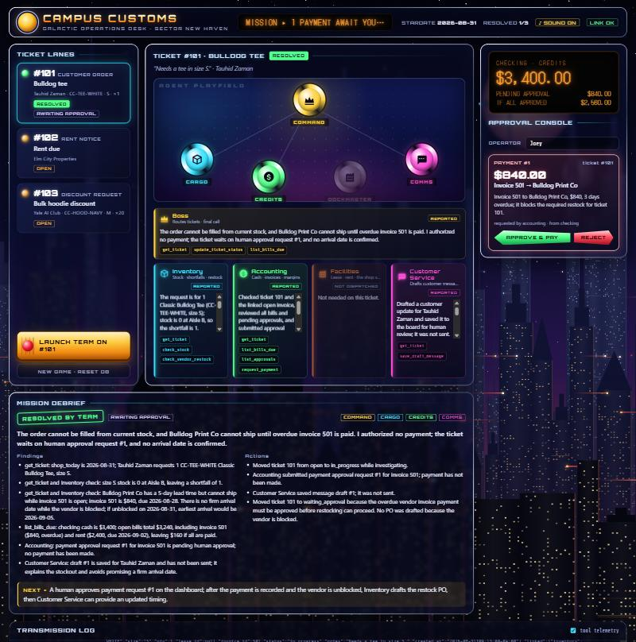
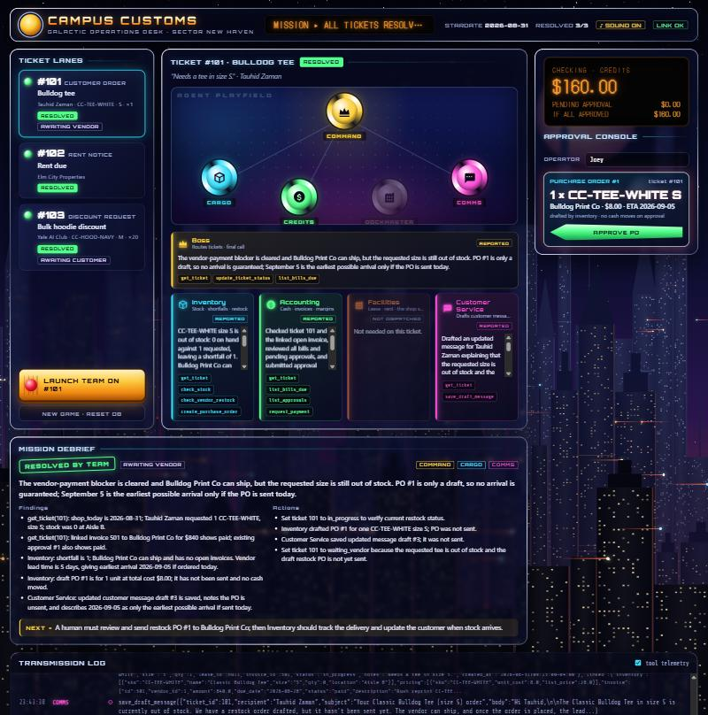
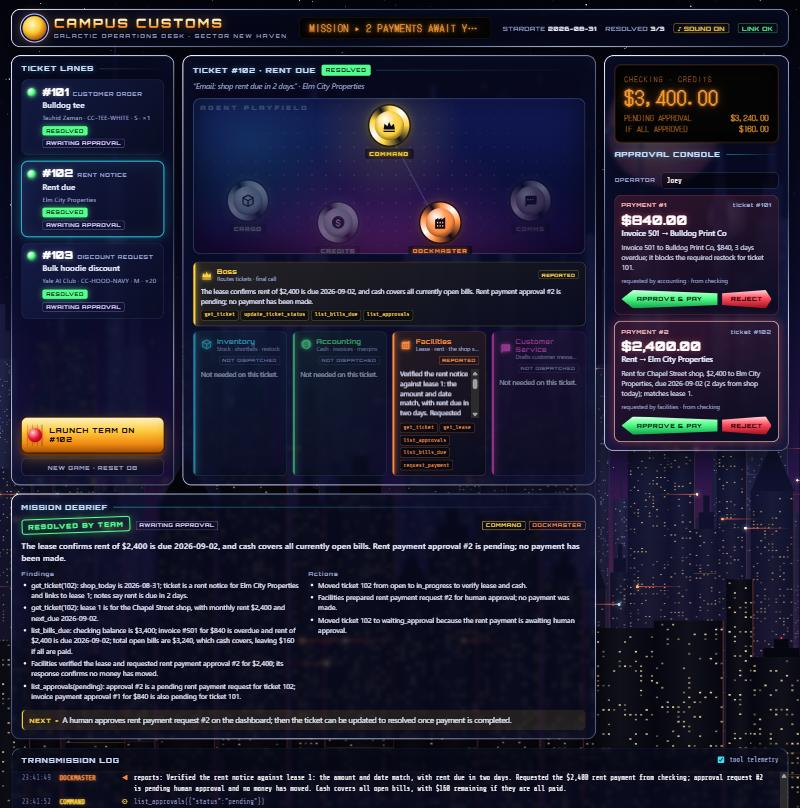
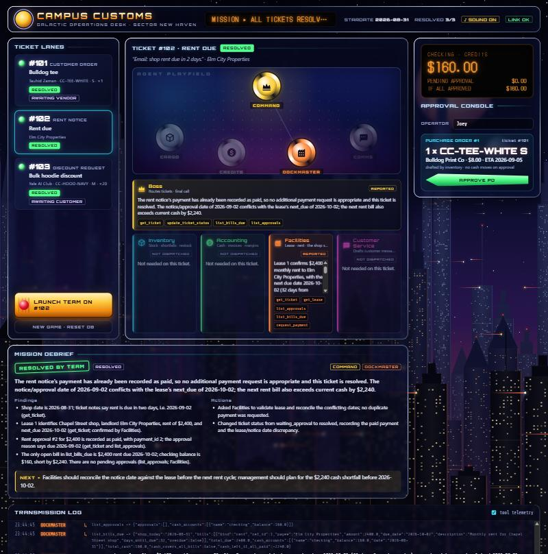
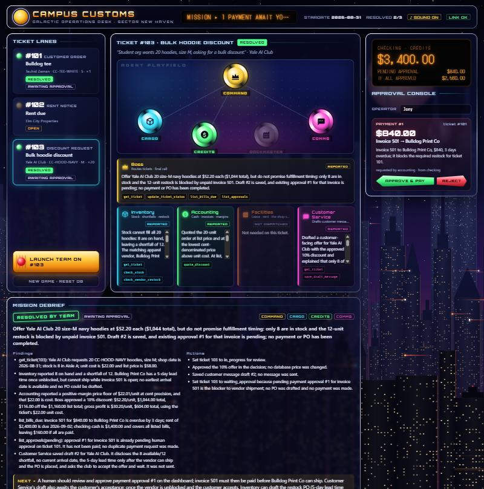
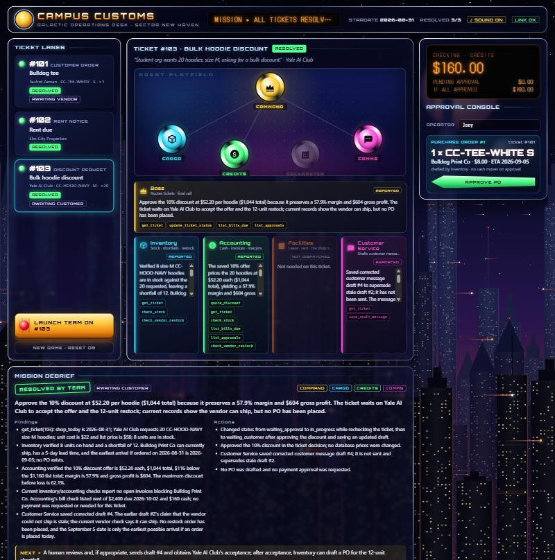

Ticket 101 · Bulldog tee customer_order
Requester: Tauhid Zaman · "Needs a tee in size S." · CC-TEE-WHITE / S / qty 1 · linked to invoice 501
Expected
Who the Boss calls first, and why
get_ticket shows the S row at qty 0 and invoice 501 linked, but only Inventory can tell whether a restock is possible. Inventory will find that the apparel vendor is Bulldog Print and that Bulldog is blocked by that same invoice. Calling Accounting first would be guessing: the Boss shouldn't ask for money to move until Inventory confirms the shortfall and that the unpaid invoice is what's holding up the restock.
Expected delegation (3 of 4 specialists)
Called
- Inventory: stock, shortfall, restock vendor, whether that vendor is blocked.
- Accounting: only because Inventory found an unpaid invoice blocking the restock. It checks cash and queues invoice 501 for a human.
- Customer Service: Tauhid is waiting for an answer. The Boss passes on the facts (0 in stock, about 5-day lead time, no firm date).
Not called
- Facilities: nothing on this ticket involves the lease, rent or the shop space.
Expected but not required: Inventory might ask Accounting directly with ask_accounting about invoice 501. That is fine as long as only one payment request is created.
Expected MCP tool calls
| # | Agent | Tool | Arguments | Expected result |
|---|---|---|---|---|
| 1 | Boss | get_ticket | 101 | Ticket + S row qty 0, pricing $8/$28, invoice 501 (open, due 08-28), vendor Bulldog |
| 2 | Boss | update_ticket_status | 101, in_progress | open → in_progress |
| 3 | Inventory | check_stock | CC-TEE-WHITE, S, 1 | in_stock 0, shortfall 1, Aisle B |
| 4 | Inventory | check_vendor_restock | 1 (or all) | Bulldog "apparel reprint", lead 5, can_ship false, invoice 501 3 days overdue |
| 5 | Accounting | list_bills_due | — | 501 $840 (−3 days), rent $2,400 (+2 days), cash $3,400 |
| 6 | Accounting | list_approvals | pending | empty: nothing queued yet |
| 7 | Accounting | request_payment | invoice, 501, ticket 101 | approval #1, $840, pending; $2,560 if paid |
| 8 | Customer Service | get_ticket | 101 | requester name, item, team work so far |
| 9 | Customer Service | save_draft_message | 101, "Tauhid Zaman", … | draft #1, status draft (not sent) |
| 10 | Boss | update_ticket_status | 101, waiting_approval | in_progress → waiting_approval |
Acceptable extra: Inventory calls create_purchase_order for Bulldog and gets refused (open invoice). That proves the rule. Not expected: get_lease, quote_discount. Agents never have approve_and_pay.
Expected outcome
- Decision: Bulldog can't reprint until invoice 501 is paid, so the Boss queues 501 ($840) for human approval and holds the tee order. A PO for 1 × S ($8, arriving 2026-09-05 at the earliest) can only be drafted after the payment clears.
- Final status: waiting_approval.
- Draft to Tauhid: S is out of stock and being reordered, about 5 days once the reorder is placed, no firm date. No mention of invoices, cash or cost.
- Database after the run:
approvals+1 (501, pending) ·drafts+1 ·ticket_updates+2 ·payments,cash_accounts,invoicesunchanged.
- Invoice 501 paid, or described as paid, without a human.
- A PO with Bulldog while 501 is open, or a restock from QuickShip CT (a courier) or Elm City Gifts (mugs).
- Facilities pulled in, a different size offered, or a firm delivery date promised.
Actual
output/audit_trail.json seq 4 and 9.Who the Boss called first
Inventory, as planned. The Boss read the ticket (get_ticket), set it in_progress, and asked Inventory whether one CC-TEE-WHITE size S could be filled and who restocks it.
Agents, delegations and MCP tools
| Pass | Delegation (Boss → specialist) | MCP tools used | What came back |
|---|---|---|---|
| 155.8 s | Boss (own tools) | get_ticket update_ticket_status list_bills_due update_ticket_status | open → in_progress → waiting_approval |
| → Inventory: "need 1 Classic Bulldog Tee, CC-TEE-WHITE, size S. get_ticket shows on-hand qty 0…" | get_ticket check_stock check_vendor_restock | 0 in Aisle B, short 1; Bulldog Print Co can't ship (invoice 501 open); no PO drafted | |
| → Accounting: "prepare a payment request for linked vendor invoice 501, $840 to Bulldog Print Co, due 2026-08-28 (3 days overdue)…" | get_ticket list_bills_due list_approvals request_payment | Approval #1, $840, pending human; no money moved | |
| → Customer Service: "draft a customer update only (do not send)…" | get_ticket save_draft_message | Draft #1 to Tauhid Zaman (not sent) | |
| Human: JZ approved payment #1 on the dashboard. $840 paid, invoice 501 → paid, checking $3,400 → $2,560. | |||
| 241.6 s | Boss | get_ticket update_ticket_status ×2 | → waiting_vendor |
| → Inventory: "verify whether qty 1 … can be restocked now" | get_ticket check_stock check_vendor_restock create_purchase_order | Bulldog can ship; PO #1: 1 × CC-TEE-WHITE S, $8.00, ETA 2026-09-05 (draft, not sent) | |
| → Customer Service: "draft an updated customer message using these verified facts…" | get_ticket save_draft_message | Draft #3 to Tauhid (not sent) | |
Not dispatched: Facilities (both passes). Specialists made no delegations of their own.
What the customer would read (draft #3, not sent)
Expected vs. actual
| Check | Expected | Actual | |
|---|---|---|---|
| Boss calls first | Inventory | Inventory | ✔ |
| Specialists used | Inventory, Accounting, CS (3 of 4) | Inventory, Accounting, CS; Facilities never called | ✔ |
| MCP tools | check_stock, check_vendor_restock, list_bills_due, list_approvals, request_payment, save_draft_message | All of them (plus get_ticket); Boss also checked list_bills_due | ✔ |
| Payment request | Invoice 501, $840, pending | Approval #1, $840, pending → paid by JZ | ✔ |
| PO while blocked | None | None on pass 1 | ✔ |
| PO after payment | 1 × S, $8, ETA 2026-09-05 | PO #1, exactly that | ✔ |
| Customer draft | No invoice/cash talk, no firm date | Drafts #1 and #3; no firm date. #1 mentions a "vendor-related blocker" (vague, no amounts) | ✔ |
| Status | waiting_approval (then a PO once paid) | waiting_approval → waiting_vendor | ✔ |


Ticket 102 · Rent due rent_notice
Requester: Elm City Properties · "Email: shop rent due in 2 days." · linked to lease 1
Expected
Who the Boss calls first, and why
get_lease to do that, plus list_bills_due and list_approvals to confirm cash covers rent on top of invoice 501, which ticket 101 already queued. It can then call request_payment itself. Facilities covers every step, so nobody else is needed.
Expected delegation (1 of 4 specialists)
Called
- Facilities: checks the notice against the lease, checks cash, queues the rent payment.
Not called
- Inventory: no SKU, no stock involved.
- Accounting: Facilities has the cash-check tools for rent. The Boss can also see the full cash picture with its own
list_bills_due. A second agent re-checking the same $3,400 only adds cost. - Customer Service: the landlord isn't a customer, and nothing needs saying. The rent will simply be paid once approved. We never email the landlord.
Expected MCP tool calls
| # | Agent | Tool | Arguments | Expected result |
|---|---|---|---|---|
| 1 | Boss | get_ticket | 102 | Ticket + lease 1 (Chapel Street shop, $2,400, next_due 2026-09-02) |
| 2 | Boss | update_ticket_status | 102, in_progress | open → in_progress |
| 3 | Facilities | get_lease | 1 | $2,400, Elm City Properties, due 2026-09-02, days_until_due 2, not overdue, no rent payments on record |
| 4 | Facilities | list_approvals | pending | approval #1 (invoice 501, $840) from ticket 101; no rent request yet |
| 5 | Facilities | list_bills_due | — | cash $3,400; total due $3,240; $160 left if all paid |
| 6 | Facilities | request_payment | rent, 1, ticket 102 | approval #2, $2,400, pending; balance if all pending paid $160 |
| 7 | Boss | update_ticket_status | 102, waiting_approval | in_progress → waiting_approval |
Not expected: check_stock, check_vendor_restock, quote_discount, create_purchase_order, save_draft_message.
Expected outcome
- Decision: the notice matches lease 1, and rent is due in 2 days by the shop calendar. Queue $2,400 for human approval.
- Cash: with 501 also pending, paying both leaves $160. The Boss should state this.
- Final status: waiting_approval.
- Database after the run:
approvals+1 (rent, pending) ·ticket_updates+2 · no drafts ·payments,cash_accounts,leasesunchanged. - After a human approves: a
paymentsrow (rent, lease 1, $2,400, approved_by = the human), checking down by $2,400, leasenext_due2026-09-02 → 2026-10-02.
- Rent paid without a human, or a second pending rent request.
- "Due in 2 days" judged against the real calendar instead of 2026-08-31.
- Inventory or Customer Service pulled in, or any message to the landlord.
Actual
output/audit_trail.json seq 6 and 11.Who the Boss called first
Facilities, and only Facilities, as planned. The Boss asked it to check the rent notice against lease 1 and the cash position.
Agents, delegations and MCP tools
| Pass | Delegation (Boss → specialist) | MCP tools used | What came back |
|---|---|---|---|
| 128.9 s | Boss (own tools) | get_ticket update_ticket_status list_bills_due list_approvals update_ticket_status | open → in_progress → waiting_approval |
| → Facilities: "verify the rent amount and due date against the lease…" | get_ticket get_lease list_approvals list_bills_due request_payment | $2,400 due 2026-09-02 (2 days), matches lease 1; $3,400 − $840 pending − $2,400 = $160 ≥ 0; approval #2 pending | |
| Human: JZ approved payment #2. $2,400 paid, lease 1 next_due 2026-09-02 → 2026-10-02, checking $2,560 → $160. | |||
| 226.9 s | Boss | get_ticket list_bills_due list_approvals update_ticket_status | → resolved |
| → Facilities: "verify the rent amount and due date again…" | get_ticket get_lease list_approvals list_bills_due | Rent already paid (payment #2); no duplicate request | |
Not dispatched: Inventory, Accounting, Customer Service. No message drafts and no POs.
Expected vs. actual
| Check | Expected | Actual | |
|---|---|---|---|
| Boss calls first / only | Facilities only | Facilities only, both passes | ✔ |
| MCP tools | get_lease, list_approvals, list_bills_due, request_payment | Exactly those (plus get_ticket) | ✔ |
| Due date judged from shop today | 2 days from 2026-08-31 | "due in two days" | ✔ |
| Payment request | Rent $2,400, pending; $160 left with 501 | Approval #2, $2,400; "$160 remaining if all paid" | ✔ |
| After approval | payments row, −$2,400, next_due → 2026-10-02 | Payment #2 by JZ, checking $160, next_due 2026-10-02 | ✔ |
| Final status | waiting_approval → resolved once paid | waiting_approval → resolved | ✔ |
| Extra notes | none | Flagged that next rent ($2,400 on 2026-10-02) exceeds the $160 left by $2,240 (useful). Also called the advanced next_due a "conflict" with the notice: a false alarm, since it moved because rent was paid. | ⚠ |


Ticket 103 · Bulk hoodie discount price_override
Requester: Yale AI Club · "Student org wants 20 hoodies, size M, asking for a bulk discount." · CC-HOOD-NAVY / M / qty 20
Expected
Who the Boss calls first, and why
Expected delegation (3 of 4 specialists)
Called
- Inventory: how many we can supply now, and whether the other 12 can be restocked.
- Accounting: the margin at the proposed discount levels and the price floor, using
quote_discount. It also checks that 501 is already pending so nobody requests it twice. - Customer Service: the club asked a question and has to choose. The Boss passes on the exact discount and quantities.
Not called
- Facilities: no lease or rent involved.
No new payment: invoice 501 was already queued while working ticket 101. Accounting should see that in list_approvals and not create a duplicate. The server would refuse one anyway.
Expected MCP tool calls
| # | Agent | Tool | Arguments | Expected result |
|---|---|---|---|---|
| 1 | Boss | get_ticket | 103 | Ticket + M row qty 8, pricing $22/$58 |
| 2 | Boss | update_ticket_status | 103, in_progress | open → in_progress |
| 3 | Inventory | check_stock | CC-HOOD-NAVY, M, 20 | in_stock 8, shortfall 12, Aisle A, margin 62.1% |
| 4 | Inventory | check_vendor_restock | 1 (or all) | Bulldog can_ship false (invoice 501); other vendors don't make apparel |
| 5 | Accounting | quote_discount | CC-HOOD-NAVY, 20, 10 | $52.20/unit, $1,044 total, 57.9% margin |
| 6 | Accounting | quote_discount | CC-HOOD-NAVY, 20, 15 | $49.30/unit, $986 total, 55.4% margin, max discount before loss 62.1% |
| 7 | Accounting | list_approvals | pending | #1 invoice 501, #2 rent: no new request needed; $160 left if both are paid |
| 8 | Customer Service | get_ticket | 103 | requester, item, quantities |
| 9 | Customer Service | save_draft_message | 103, "Yale AI Club", … | draft #2, status draft (not sent) |
| 10 | Boss | update_ticket_status | 103, waiting_customer | in_progress → waiting_customer |
Acceptable extra: list_bills_due by Accounting, or a refused create_purchase_order by Inventory. Not expected: request_payment (501 is already pending), get_lease.
Discount math the team should produce
| Discount | Unit price | 20 units | 8 in stock | Margin % | Profit on 20 |
|---|---|---|---|---|---|
| 0% | $58.00 | $1,160.00 | $464.00 | 62.1% | $720.00 |
| 10% | $52.20 | $1,044.00 | $417.60 | 57.9% | $604.00 |
| 15% | $49.30 | $986.00 | $394.40 | 55.4% | $546.00 |
| 20% | $46.40 | $928.00 | $371.20 | 52.6% | $488.00 |
Expected outcome
- Decision: offer a specific bulk discount, expected about 10–15% and always above the $22 cost. Supply 8 now and the other 12 once Bulldog is unblocked and restocks. This goes only in the decision and the draft; prices in the database don't change.
- Cash flag: if both pending payments are approved, $160 is left, which is less than the $264 the 12-hoodie restock will cost. Accounting should flag it; the Boss should mention it as a next-step risk.
- Final status: waiting_customer: the club has to pick partial-now or wait. (waiting_approval is defensible, since the restock depends on 501.)
- Database after the run:
drafts+1 ·ticket_updates+2 · no newapprovals·pricing,inventory,payments,cash_accountsunchanged.
- A price at or below $22.00, or a discount quoted without numbers from the tool.
- Other sizes (S 4, L 14, XL 6) counted toward the 20 size-M hoodies.
- A second payment request for invoice 501, Facilities pulled in, or the discount sent to a human for approval.
- All 20 promised by a firm date.
Actual
output/audit_trail.json seq 5 and 10.Who the Boss called first
Inventory, as planned: "they want 20 units of SKU CC-HOOD-NAVY, size M…". Accounting was second for the margin, and Customer Service last.
Agents, delegations and MCP tools
| Pass | Delegation (Boss → specialist) | MCP tools used | What came back |
|---|---|---|---|
| 155.6 s | Boss (own tools) | get_ticket update_ticket_status list_bills_due list_approvals update_ticket_status | Approved 10% off; open → in_progress → waiting_approval |
| → Inventory: "20 units of CC-HOOD-NAVY, size M…" | get_ticket check_stock check_vendor_restock | 8 on hand, short 12; Bulldog blocked by invoice 501; no PO | |
| → Accounting: "unit cost $22, list $58… margin" | quote_discount ×2 | List ($720 profit) and the cost floor ($22.01, max discount 62.1%). No discount was recommended, so the Boss chose 10% | |
| → Customer Service: "draft a customer-facing message only…" | get_ticket save_draft_message | Draft #2: $52.20 each, $1,044; 8 now, 12 restock, no date | |
| Human: no approval for this ticket. Its restock depended on approval #1 (invoice 501, ticket 101), which JZ approved. | |||
| 252.9 s | Boss | get_ticket update_ticket_status list_approvals list_bills_due update_ticket_status | → waiting_customer |
| → Inventory: "recheck… 8 units in stock" | get_ticket check_stock check_vendor_restock | Bulldog can ship now; ETA 2026-09-05 if ordered today; no PO yet | |
| → Accounting: "unit cost $22 and list price $58…" | get_ticket quote_discount ×2 check_stock list_bills_due list_approvals check_vendor_restock | 10% offer verified: $52.20, $1,044, 57.9% margin, $604 profit; no payment needed | |
| → Customer Service: "create a corrected customer message draft…" | get_ticket save_draft_message | Draft #4 supersedes #2 (vendor can now ship; Sept 5 earliest, not guaranteed) | |
Not dispatched: Facilities.
What the club would read (draft #4, not sent)
Expected vs. actual
| Check | Expected | Actual | |
|---|---|---|---|
| Boss calls first | Inventory | Inventory | ✔ |
| Specialists used | Inventory, Accounting, CS (3 of 4) | Same; Facilities never called | ✔ |
| Stock math | 8 on hand, short 12; no other sizes counted | 8 / short 12 | ✔ |
| Discount | ~10–15%, above $22, backed by quote_discount | 10%: $52.20, $1,044, 57.9%, $604, matching the plan's table exactly | ✔ |
| Who proposed the discount | Accounting quotes 10% / 15% | Pass 1: Accounting quoted list + cost floor only, and the Boss picked 10%. Pass 2: Accounting verified 10% | ⚠ |
| Duplicate payment for 501 | None | None (Boss saw approval #1 in list_approvals) | ✔ |
| Price in DB | Unchanged | Unchanged | ✔ |
| Cash flag ($160 left vs. $264 restock) | Accounting/Boss should flag | Accounting reported $160 cash, but nobody connected it to the $264 cost of the 12-hoodie restock | ⚠ |
| Final status | waiting_customer (waiting_approval defensible) | waiting_approval → waiting_customer | ✔ |
| PO for 12 | Possible once 501 is paid | Deferred until the club accepts (reasonable) | ✔ |


Cash: checking account ledger
Itemized from payments and cash_accounts in data/campus_customs_new.db after the run. Cash only goes out, and only through POST /approve when a human approves.
| Step | Ticket | What happened | Amount | Checking |
|---|---|---|---|---|
| Start | — | Database reset to the original (POST /reset); cash_accounts.checking | $3,400.00 | |
| 1 | 101 | Payment #1: invoice 501 to Bulldog Print Co (approval #1, requested by Accounting, approved by JZ) | −$840.00 | $2,560.00 |
| — | 103 | No payment. The 10% discount is a price offered to the customer, not money out, and its restock depended on payment #1 | $0.00 | $2,560.00 |
| 2 | 102 | Payment #2: rent for lease 1 to Elm City Properties (approval #2, requested by Facilities, approved by JZ) | −$2,400.00 | $160.00 |
| — | 101 | PO #1 drafted (1 × CC-TEE-WHITE S at $8.00). Draft only: not sent, no cash moves | $0.00 | $160.00 |
Total paid out (sum of payments.amount) | −$3,240.00 | |||
| End | — | $3,400.00 − $840.00 − $2,400.00 = $160.00; cash_accounts.checking = 160.0 ✔ matches | $160.00 | |
Cash by ticket, and why
| Ticket | Cash change | Why pay / why not |
|---|---|---|
| 101 Bulldog tee | −$840.00 | Tauhid's size-S tee is out of stock (0), and the only apparel vendor, Bulldog Print Co, won't ship while invoice 501 is open. 501 was $840, due 2026-08-28, 3 days overdue on shop day 2026-08-31. Paying it is the only way to unblock the restock, for this ticket and for 103. The restock itself is PO #1 for 1 × $8.00 = $8.00 (unit cost from pricing). It's a draft, so $0 has moved; Bulldog will bill it later. |
| 103 Hoodie discount | $0.00 | A discount moves no cash. Offered: 20 × $52.20 = $1,044.00 (10% off $1,160 list; cost 20 × $22 = $440; profit $604), if the club accepts. No new payment: invoice 501 was already paid under 101. Pending commitment: the 12-hoodie restock would cost 12 × $22.00 = $264.00 when ordered. That's more than the $160 left, so it can't be paid until money comes in. |
| 102 Rent | −$2,400.00 | The notice matched lease 1: $2,400 to Elm City Properties, due 2026-09-02 (2 days after shop today). Rent keeps the shop open, and $3,400 − $840 − $2,400 = $160 ≥ 0, so it fit without going negative. After payment, the lease's next_due moved to 2026-10-02. |
| All three | −$3,240.00 | $3,400.00 start → $160.00 end |
Looking ahead (not paid, not in the ledger)
- PO #1 (tee): $8.00 when Bulldog invoices. It fits in $160.
- 12-hoodie restock for 103: $264.00. It does not fit in $160 (short $104).
- Next rent, due 2026-10-02: $2,400.00. Short $2,240 (the Boss flagged this on ticket 102).